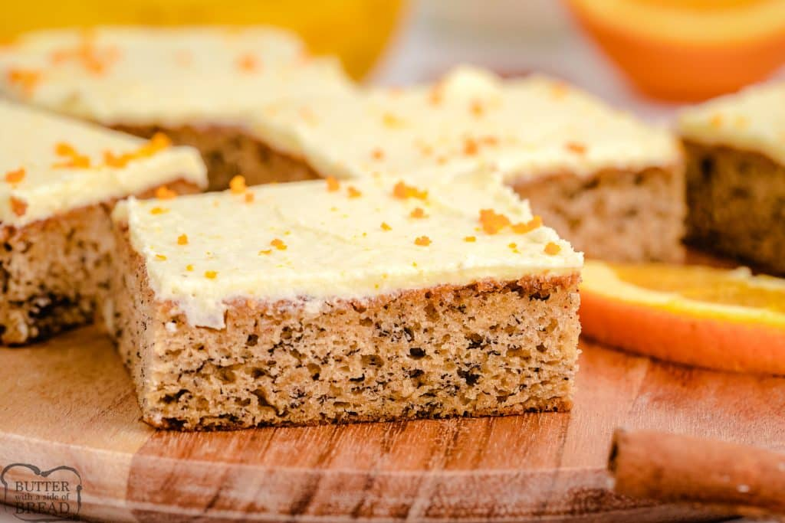

-

Banana Bread Bars
Ingredients
- White Sugar - 1½ cups
- Sour Cream - 1 cup
- Butter - ½ cup
- Eggs - 2
- Ripe Bananas - 2, mashed
- Milk - 3 tablespoons
- Vanilla - 2 teaspoons
- Flour - 2 cups
- Baking Soda - 1 teaspoon
- Salt - 3/4 teaspoon
- Chopped Walnut - ½ cup
- Butter - ½ cup
- Sugar - 4 cups
- Vanilla - 1½ teaspoons
Method of Preparation
Preheat oven to 350°F. Rub oil on a baking pan and dsut with flour. In a bowl mix sugar, sour cream, butter and eggs. In another bowl, comnbine the bananas and vanilla.
Add flour, baking soda, salt and walnuts. Mix and pour into the baking pan and bake for 27 minutes.
In a saucepan, add the butter, sugar, vanilla and milk. Mix and pour over cooled cake. Serve